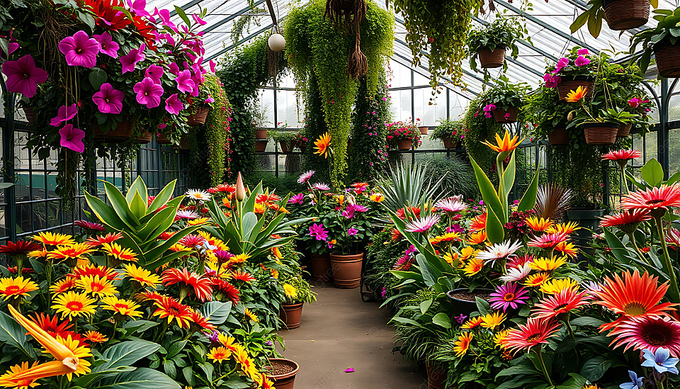
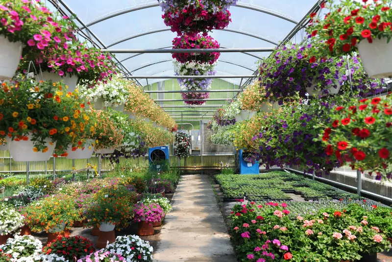
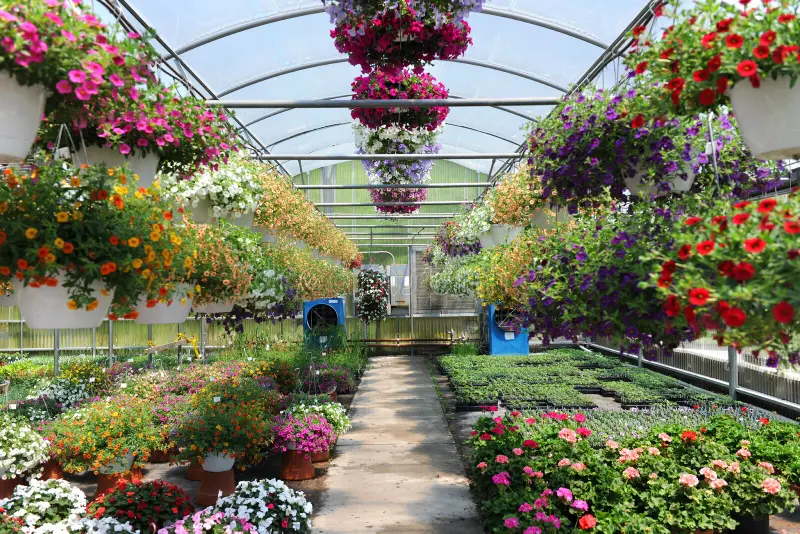
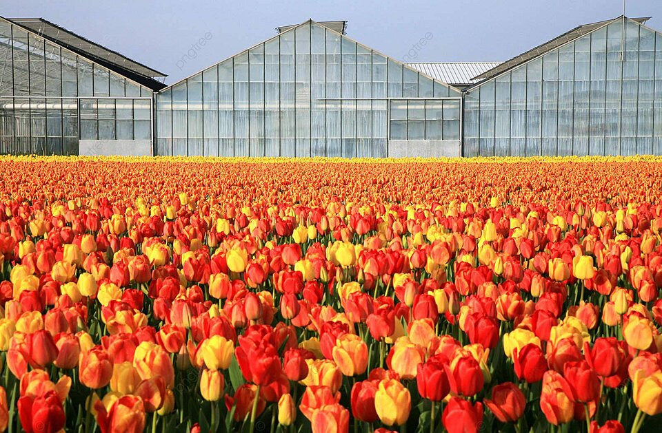
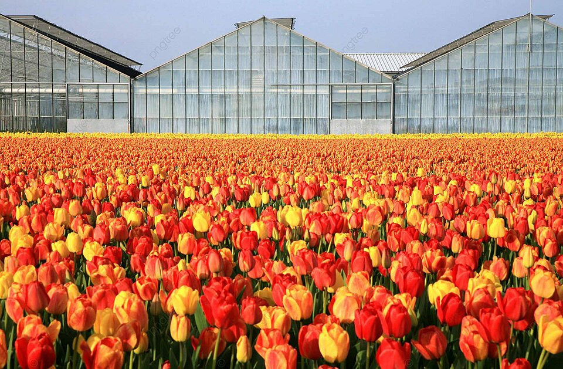
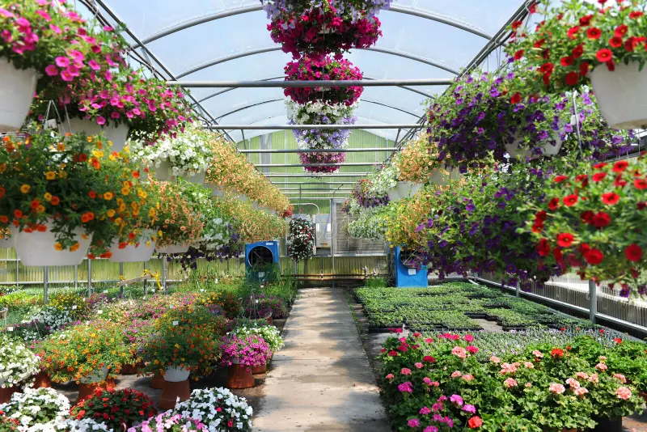
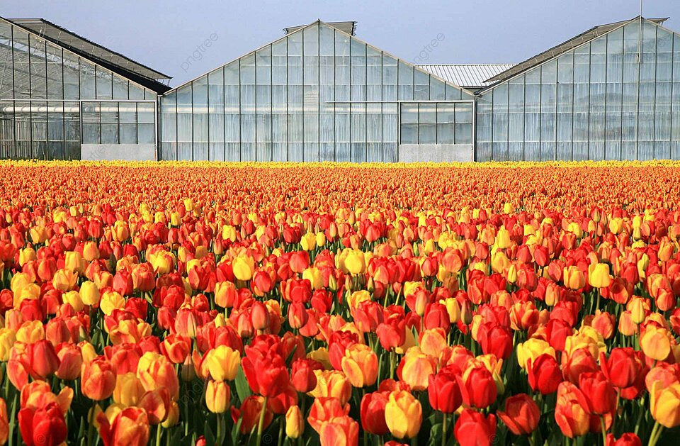
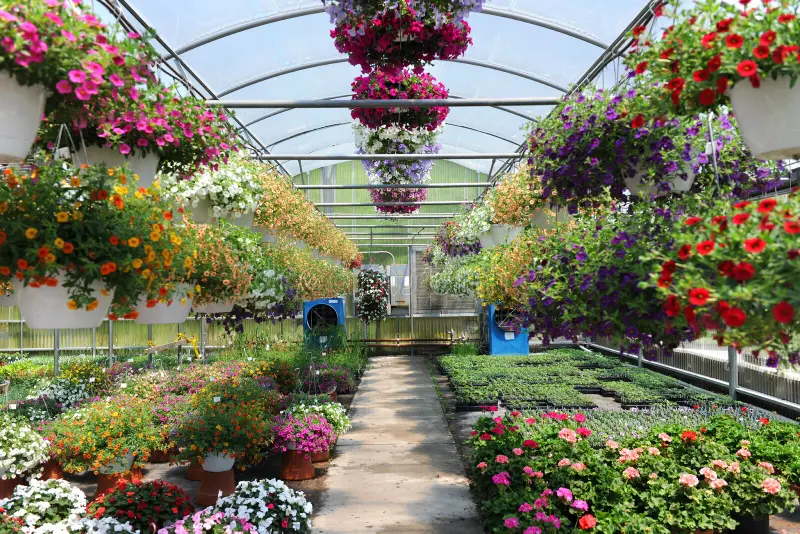
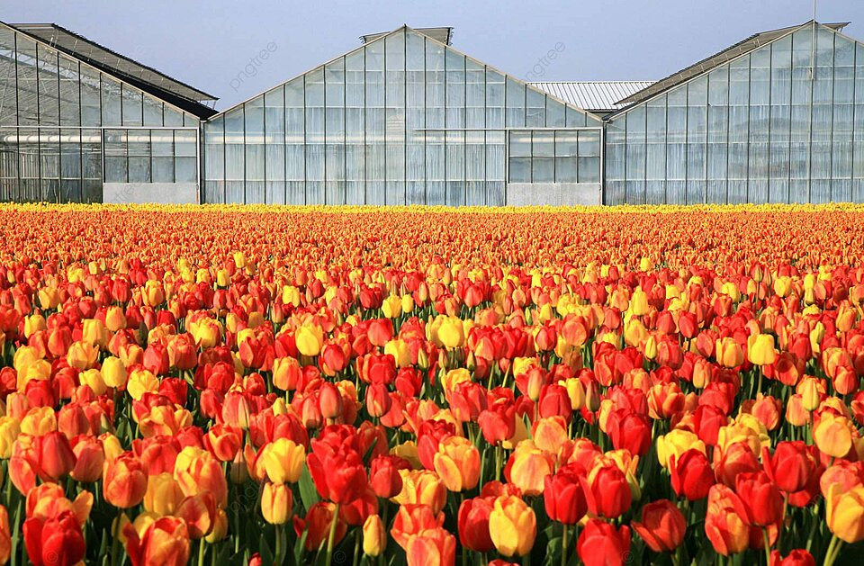

 

 





Esta es la zona de contenido principal.
Observa el cuidado y la vida de nuestras plantas.
Nuestro invernadero utiliza técnicas de cultivo sostenibles para garantizar la mejor calidad en cada espécimen que ofrecemos.
Sostenibilidad, Innovación y Cuidado de la Vida.
Ser el **referente global** en el cultivo sostenible bajo cubierta, transformando los espacios de invernadero en ecosistemas de alta productividad, autosuficientes, y pioneros en la aplicación de **tecnologías verdes** para el bienestar del planeta y la comunidad.
Garantizar la producción óptima y continua de cultivos de alta calidad, maximizando la eficiencia de recursos (agua y energía) a través de la **innovación tecnológica** y prácticas ecológicas, promoviendo al mismo tiempo la educación y la conciencia sobre la agricultura responsable en entornos controlados.
**Monitoreo automatizado de clima.**
Instalar sensores para registrar y ajustar automáticamente la temperatura, la humedad y la ventilación (CO₂). *Previene estrés en las plantas.*
**Sistema de riego por goteo o hidroponía.**
Utilizar sistemas cerrados para recircular la solución nutritiva. **Minimiza el desperdicio de agua** y optimiza la ingesta de nutrientes.
**Control Biológico Integrado (CBI).**
Introducir depredadores naturales (insectos benéficos) para controlar las plagas, **evitando pesticidas químicos.**
**Limpieza estacional de la cubierta.**
Lavar el exterior del plástico o vidrio dos veces al año (primavera y otoño). **Maximiza la entrada de luz solar.**